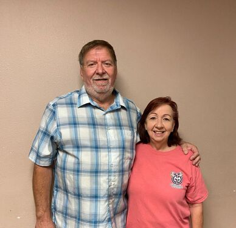

harvest pastors
Pastor Terry and Pam Fletcher have been full time Pastors since July 1990. They worked part time for several years in youth, young singles and as Associate Pastors then decided to accept the Pastorate at Victory Christian Fellowship in Columbus, NE. They held that position for 8 years. Terry then felt led by the Spirit to resign from the Church in Nebraska and move 500 miles to a small town in Southeast Missouri. In April of 2001, they became pastors of Lighthouse Full Gospel Church. Terry had a vision to reach the lost and the name of the Church was changed to Harvest Church and has since been reaching the lost in a variety of outreach ministries. In 2009, Harvest bought land at the edge of Aurora MO and since then they have seen a great number of people saved and baptized in The Holy Spirit.